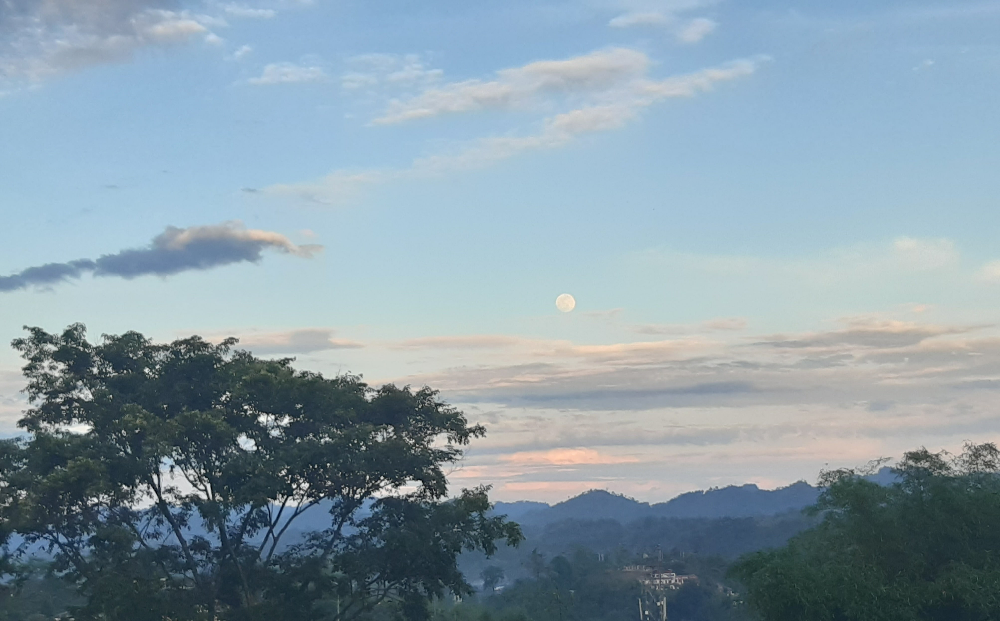
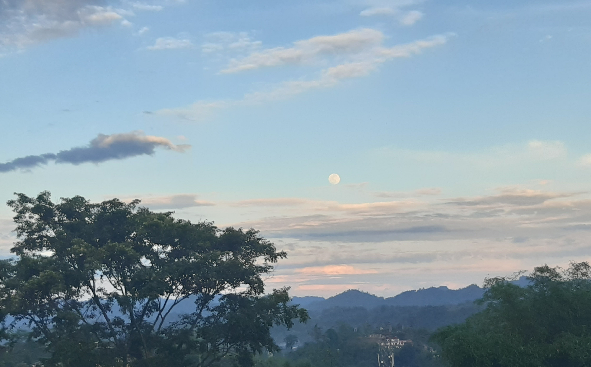

Hi, thanks for visiting my site
I am a sophomore doing B.Tech in Engineering Physics at Mumbai. My discipline revolves around using first principle ideas to solve engineering problems. But, that's just my discipline. I cannot do any of that. I am a C tier student who has to put in a lot of effort just to get a B grade.
But I do enjoy attempting though, you can checkout my project section to see some of my failed attempts, and (on rare occasions) successful attempts too.
THIS SECTION IS EMPTY, LIKE MY FUTURE
I just realized I don't have much to show on the homepage and as I have not visited my college yet, due to COVID-19, here are some of the pictures of my place of origin, Itanagar:
Also I know the background here looks ugly, But that's a deliberate Artistic choice for High IQ people like me
 
